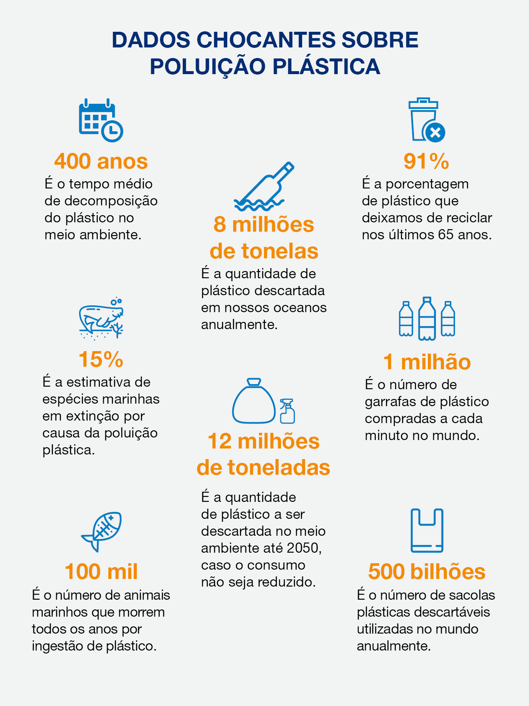
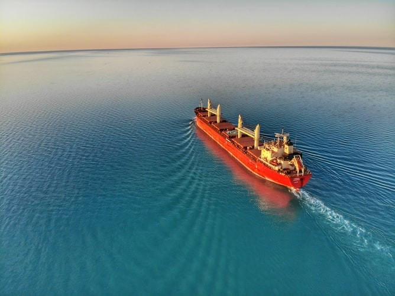

AS SOLUÇÕES PARA O PROBLEMA
Essas são as soluções que estão sendo discutidas para resolver os problemas que os oceanos enfrentam
Como você pode estar ajudando o oceano?
Separamos um tópico com 10 formas em que VOCÊ pode estar ajudando o oceano
1. Reduza a sua pegada ecológica e o consumo de energia
Mantenha os carros em casa o máximo possível para reduzir o impacto das mudanças climáticas no oceano e esteja atento ao consumo de energia em casa e no trabalho. Há coisas que você pode fazer para minimizar o impacto de seu estilo de vida no meio ambiente. Substitua as lâmpadas incandescentes tradicionais por lâmpadas fluorescentes compactas, prefira escadas a elevadores, agasalhe-se ou use um ventilador para evitar sobrecarregar seu termostato.
2. Prefira peixe e marisco saudável e sustentável
Os estoques globais de peixes estão diminuindo rapidamente devido à demanda, perda de habitat e práticas de pesca insustentáveis. Ajude a reduzir a necessidade de espécies sobrepescadas escolhendo espécies que sejam saudáveis e sustentáveis ao comprar peixes e frutos do mar ou comer fora.
3. Consuma menos plástico
O plástico que habita e polui os oceanos ajuda a destruir habitats, enredando e matando dezenas de milhares de vida marinha a cada ano. Para reduzir seu impacto, escolha garrafas de água reutilizáveis, embale alimentos em recipientes reutilizáveis, carregue panos ou outras sacolas reutilizáveis com você ao fazer compras e recicle sempre que possível.
4. Cuide das praias
Se você gosta de mergulhar, surfar ou apenas relaxar na praia, certifique-se de manter seu espaço limpo. Explore e aproveite o oceano sem perturbar a vida selvagem, remover rochas ou rasgar corais. Eleve os padrões e conscientize sobre a necessidade de respeitar a vida marinha ou participar de limpezas de praias em sua área.
5. Não adquira bens que exploram a vida marinha
Alguns produtos podem ser prejudiciais e causar danos aos frágeis recifes de coral, com impactos severos nas populações de peixes. Evite itens como joias de coral, acessórios de cabelo feitos de cascos de tartaruga e produtos derivados de tubarão.
6. Seja dono de um animal de estimação e amigo dos oceanos
Ao definir a dieta do seu animal de estimação, leia o rótulo da ração do seu animal de estimação e considere a sustentabilidade das espécies de peixes e mariscos. Nunca despeje o lixo da caixa de areia no vaso sanitário, pois pode conter patógenos prejudiciais à vida marinha. Evite encher seu aquário doméstico com peixes de água salgada capturados na natureza e não coloque peixes ornamentais no oceano ou em outros cursos de água, que podem introduzir espécies exóticas que podem ser prejudiciais aos ecossistemas existentes.
7. Apoie as organizações que trabalham para proteger os oceanos
Muitas agências e organizações estão trabalhando para proteger os habitats marinhos e a vida marinha. Encontre uma organização nacional e considere apoiá-la financeiramente ou se voluntariar para trabalhar no campo ou na advocacia. Se você mora perto da costa, junte-se a uma delegação ou grupo local e envolva-se em projetos em sua área.
8. Promova a mudança no seio da sua comunidade
Saiba mais sobre as políticas marinhas anunciadas pelas autoridades públicas antes de votar ou entre em contato com seu representante local para mostrar seu apoio a projetos de conservação da vida marinha. Considere patrocinar restaurantes e mercearias que ofereçam apenas espécies sustentáveis de mariscos e levante suas preocupações se vir uma espécie ameaçada de extinção em seu cardápio ou balcão de marisco.
9. Navegue nos oceanos de forma responsável
e você estiver andando de barco ou pescando, andando de caiaque ou participando de outras atividades recreativas no mar, faça-o com responsabilidade. Nunca jogue nada ao mar e tome cuidado com a vida marinha nas águas circundantes. Se você está pensando em fazer um cruzeiro nas próximas férias, faça uma pesquisa e escolha as ofertas mais ecológicas.
10. Eduque a si mesmo a respeito dos oceanos e da vida marinha
Toda a vida na Terra está relacionada aos oceanos e às pessoas que vivem neles. Quanto mais você aprender sobre os desafios desse importante sistema, mais trabalhará para defender sua sustentabilidade, então compartilhe seu conhecimento para educar e inspirar outras pessoas.